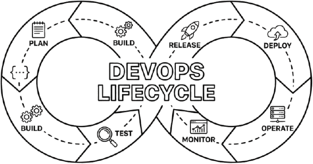

What is DevOps?
DevOps is a set of practices, tools, and cultural philosophies that automate and integrate the processes between software development and IT teams. It emphasizes team empowerment, cross-functional communication, and technology automation to build, test, and release software faster and more reliably.
The "Wall of Confusion" and the History of DevOps
Traditionally, software development (Dev) and IT operations (Ops) worked in silos. Developers wanted to push code changes quickly to add new features. Operations wanted to avoid changes to maintain stability and uptime. This conflict created a "Wall of Confusion," resulting in slow releases, bugs, and blame games.
DevOps emerged from the Agile movement to break down this wall. It is not just a job title; it is a culture where the people who write the code are also responsible for how it runs in production.
How DevOps Fits into Modern Delivery
In a DevOps model, development and operations teams are no longer "siloed." Sometimes, these two teams are merged into a single team where engineers work across the entire application lifecycle, from development and test to deployment to operations.

Why DevOps Matters for Modern Teams
DevOps matters because it accelerates software delivery, improves service reliability, and fosters a culture of shared responsibility. By automating manual processes, companies can innovate faster, recover from failures more quickly, and deliver higher value to end-users.
Benefits for Developers, Companies, and Users
- Speed: Move from quarterly releases to weekly, daily, or even hourly updates.
- Reliability: Ensure updates are safe and infrastructure is stable using Continuous Integration and Continuous Delivery (CI/CD).
- Scale: Manage infrastructure at scale using automation and consistency.
- Collaboration: Developers and operations staff work closely, sharing responsibilities and combining workflows.
- Security: By adopting a "DevSecOps" model, security is integrated into the development process from the start, rather than tacked on at the end.
Real-World Impact: Before vs. After DevOps
| Feature | Traditional IT Operations | Modern DevOps |
|---|---|---|
| Release Frequency | Weeks or Months | On-demand (Multiple times per day) |
| Change Failure Rate | High (Manual errors common) | Low (Automated testing & rollback) |
| Incident Recovery | Hours or Days | Minutes (Automated healing) |
| Responsibility | "It's not my job" | "You build it, you run it" |
What Does a DevOps Engineer Do?
A DevOps engineer introduces processes, tools, and methodologies to balance needs throughout the software development life cycle, from coding and deployment to maintenance and updates. They bridge the gap between code generation and code execution.
Daily Tasks and Responsibilities
A DevOps engineer is rarely writing application code (like a backend developer) but is constantly writing code to manage the application. Typical daily tasks include:
- Building CI/CD Pipelines: Creating automated workflows that test and deploy code whenever a developer saves their work.
- Infrastructure Provisioning: Using code to spin up servers, databases, and networks on cloud platforms like DevOps with AWS or Azure DevOps.
- Monitoring and Alerting: Setting up dashboards (using tools like Prometheus or Grafana) to watch system health and alert the team if a server goes down.
- Security Integration: scanning code for vulnerabilities automatically before it reaches production.
- Troubleshooting: helping developers debug why an application runs on their laptop but fails in the cloud.
Essential DevOps Skills and Tools
To follow a **DevOps engineer roadmap**, you must master a blend of soft skills (culture) and technical skills (tools). Here is the breakdown of the ecosystem.
Core Concepts
1. CI/CD (Continuous Integration and Continuous Delivery)
CI/CD is the practice of frequently merging code changes into a central repository where automated builds and tests run. "Continuous Delivery" ensures that code can be released to production at any time. This is the heart of DevOps automation.
2. Infrastructure as Code (IaC)
Infrastructure as Code is the process of managing and provisioning computer data centers through machine-readable definition files, rather than physical hardware configuration or interactive configuration tools. Ideally, you should be able to destroy your entire infrastructure and rebuild it exactly the same way using a single command.
3. Monitoring and Observability
Monitoring involves collecting and analyzing data to track the performance and health of applications and infrastructure. Observability goes deeper, allowing engineers to understand the internal state of a system based on the data it generates (logs, metrics, traces).
Popular Tools by Category
- Version Control: Git (The standard for tracking code changes), GitHub / GitLab (Hosting code and collaboration).
- CI/CD Tools: Jenkins (The classic, highly customizable tool), GitHub Actions (Modern, integrated), GitLab CI.
- Containerization: Docker (Packages apps with dependencies).
- Orchestration: Kubernetes (Manages containers at scale).
- Infrastructure as Code: Terraform (Industry standard for cloud provisioning), Ansible (Configuration management).
- Cloud Platforms: AWS (Amazon Web Services), Azure (Microsoft), GCP (Google Cloud Platform).
- Monitoring: Prometheus, Grafana, ELK Stack (Elasticsearch, Logstash, Kibana).
DevOps Engineer Roadmap for Beginners
This DevOps roadmap is designed for a global beginner starting from scratch. Do not rush; build a strong foundation.
Phase 1: The Basics
- Operating Systems (Linux): 90% of servers run Linux. Learn terminal
commands (
ls,grep,chmod,ssh), file systems, and shell navigation. - Networking: Understand HTTP/HTTPS, DNS, IP addresses, Firewalls, and Ports. You cannot debug a server if you don't understand how it talks to the internet.
- Git: Learn how to clone repos, commit code, manage branches, and resolve merge conflicts.
Phase 2: Programming and Scripting
- Language: Python or Go (Golang) are the top choices.
- Scripting: Bash scripting is mandatory for Linux automation.
- Goal: Write a script that automates a boring daily task, like backing up a folder to a different location.
Phase 3: Cloud Fundamentals
- Pick one provider: DevOps with AWS is the market leader, but Azure DevOps is huge in the enterprise world.
- Learn the basics: Compute (EC2/VMs), Storage (S3/Blob), and Networking (VPC/VNET).
Phase 4: CI/CD and Automation
- Learn Jenkins or GitHub Actions.
- Project: Create a pipeline that runs a "Hello World" script every time you push code to GitHub.
Phase 5: Containers and Orchestration
- Docker: Learn to write a
Dockerfile. Understand images vs. containers. - Kubernetes: Learn the architecture (Nodes, Pods, Services). It is complex, so start small.
Phase 6: Infrastructure as Code (IaC)
- Terraform: Learn to provision a cloud server using code, not the web console.
DevOps Engineer Salary and Career Growth
DevOps engineers typically command higher salaries than traditional IT support or system administration roles due to the specialized combination of coding, infrastructure, and operations skills required.
Global Salary Overview
While specific numbers vary by country (e.g., salaries in the USA are higher than in Europe or Asia), the DevOps engineer salary trend is consistent: it is a high-paying, premium role.
- Entry-Level: Competitive with Junior Software Developers.
- Mid-Level: Often exceeds standard software development roles due to the scarcity of infrastructure skills.
- Senior/Lead: Highly lucrative, comparable to Software Architects.
Career Paths
DevOps is not a dead-end job. It opens doors to several advanced career tracks:
- Site Reliability Engineer (SRE): Focuses heavily on availability, latency, performance, and capacity (pioneered by Google).
- Platform Engineer: Builds the internal platforms (IDPs) that developers use to ship code self-service.
- Cloud Architect: Focuses on high-level design and strategy for cloud migration and cost optimization.
DevOps Engineer Jobs and Remote Opportunities
DevOps roles are highly conducive to remote work as they rely on cloud-based tools and digital collaboration platforms. Whether you are in India, Nigeria, the UK, or the US, the job market is accessible.
Job Titles to Look For
When searching for devops engineer jobs, look for these variations:
- Cloud Engineer
- Systems Engineer
- Build and Release Engineer
- Platform Engineer
- SRE (Site Reliability Engineer)
- Infrastructure Engineer
Remote Opportunities
Because DevOps deals with virtual servers (Cloud) rather than physical data centers, devops engineer remote jobs are very common. Companies care more about your ability to maintain uptime and automate workflows than your physical location.
How to Get Hired
- Build a Portfolio: Do not just list skills. Create a GitHub repository with a README explaining a project where you deployed an app using Docker and Terraform.
- Certifications: AWS Certified Solutions Architect or Terraform Associate certifications help get past HR filters.
- Soft Skills: Emphasize collaboration. DevOps is about communication as much as coding.
How to Learn DevOps: Courses, Books, and Practice Projects
The best way to learn DevOps is through a combination of structured courses, reading foundational books like "The Phoenix Project," and building hands-on projects.
Recommended Books (DevOps Engineer Books)
- The Phoenix Project (Gene Kim): A novel that explains the why of DevOps. Essential reading.
- The DevOps Handbook: The practical manual for implementing the philosophy.
- Accelerate: The science and metrics behind high-performing teams.
Courses and Learning Paths
- Video Courses: Look for "DevOps Bootcamp" courses on platforms like Udemy or Coursera. Ensure they cover Linux and AWS/Azure.
- Interactive Labs: Platforms like KodeKloud or Whizlabs allow you to practice on real servers in the browser.
- YouTube: Great for specific tutorials (e.g., "How to install Kubernetes").
Starter Projects for Beginners
- Static Website: Host a personal resume website on AWS S3 or Azure Blob Storage.
- Dockerization: Take a simple Python app and create a Docker image for it.
- End-to-End Pipeline: Write a GitHub Action that runs a test script whenever you commit code.
Common Mistakes Beginners Make in DevOps
- Focusing on Tools over Concepts: Learning Kubernetes commands without understanding why you need orchestration is a mistake. Understand the problem before the tool.
- Ignoring Fundamentals: Skipping Linux and Networking to jump straight to Cloud is like building a roof without a foundation.
- GUI Dependency: Relying on graphical interfaces (Clicking buttons in the AWS console) instead of learning CLI (Command Line Interface) and IaC.
- Neglecting Soft Skills: DevOps is about breaking silos. If you can't communicate with developers, you cannot succeed.
FAQ: DevOps Questions from Beginners
Final Action Plan for Future DevOps Engineers
If you are ready to start, here is your plan:
- Month 1: Install Linux (or use WSL). Learn the command line. Learn Git.
- Month 2: Learn Python basics. Write scripts to automate file management.
- Month 3: Sign up for DevOps with AWS (Free Tier). Launch a server.
- Month 4: Learn Docker. Containerize a simple Python app.
- Month 5: Build a CI/CD pipeline using GitHub Actions.
- Month 6: Learn Terraform. Automate everything you did in Month 3.
Ready to start your journey? Consistency is key. Start building your GitHub portfolio today and join local or online DevOps communities to accelerate your learning.